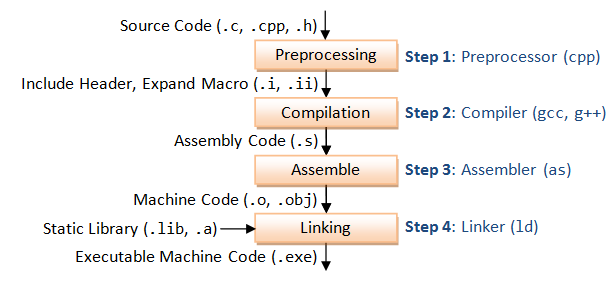
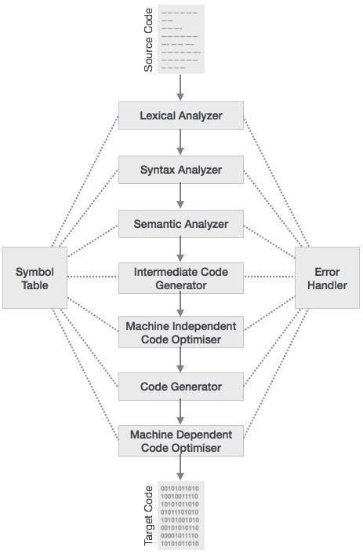

一、前言
本质是存在的真理，是自己过去了的或内在的存在。
—— 格奥尔格·威廉·弗里德里希·黑格尔《小逻辑》第二篇 本质论 §112
本篇文章是一个间章。旨在衔接文法理论与编译过程，从架构上概述整个编译程序。文法理论旨在解释自然语言，而编译过程却要创造新的语言。编译程序通过将文法规则机械化，创造出易于理解的高级语言，实现了计算的高级抽象。
二、何为 “编译”
为了理解何为 “编译”，我们可以从一个具体的编译器开始。这里我们以 C 语言的编译过程为例：
现在有一个简单的由 C 语言文法写成的文本文件 test.c
// test.c
#include <stdio.h>
int main() {
printf("hello, world.\n");
return 0;
}
想要将其编译为可执行文件，当然可以使用 gcc test.c -o test 或 clang test.c -o test，但是这样就不能反映编译的具体过程了。所以这里我编写了一个 Makefile，用来指明 gcc 编译时所经历的具体步骤。
# Makefile
srcname = test
cc = gcc
# Default target
all: $(srcname)
@echo "Finish!"
# Linking stage
$(srcname): $(srcname).o
@echo "Linking stage: Creating executable '$(srcname)'"
$(cc) $(srcname).o -o $(srcname)
# Assembly stage
$(srcname).o: $(srcname).s
@echo "Assembly stage: Creating object file '$(srcname).o'"
$(cc) -c $(srcname).s -o $(srcname).o
# Compilation stage
$(srcname).s: $(srcname).i
@echo "Compilation stage: Creating assembly file '$(srcname).s'"
$(cc) -S $(srcname).i -o $(srcname).s
# Preprocessing stage
$(srcname).i:
@echo "Preprocessing stage: Creating preprocessed file '$(srcname).i'"
$(cc) -E $(srcname).c -o $(srcname).i
# Clean target
clean:
@echo "Cleaning up"
rm -f $(srcname).i $(srcname).s $(srcname).o $(srcname)
按照 Makefile 中的内容，想要将源文件翻译成可执行二进制文件需要经历以下几个步骤：
- 预处理：将预处理宏替换为对应的文本，翻译得到不含预处理宏的 C 语言代码
# Preprocessing stage $(srcname).i: @echo "Preprocessing stage: Creating preprocessed file '$(srcname).i'" $(cc) -E $(srcname).c -o $(srcname).i - 编译：将不包含预处理宏的 C 语言代码翻译成汇编代码
# Compilation stage $(srcname).s: $(srcname).i @echo "Compilation stage: Creating assembly file '$(srcname).s'" $(cc) -S $(srcname).i -o $(srcname).s - 汇编：将汇编代码翻译成二进制机械码
# Assembly stage $(srcname).o: $(srcname).s @echo "Assembly stage: Creating object file '$(srcname).o'" $(cc) -c $(srcname).s -o $(srcname).o - 链接：将多个机械码的目标文件合并成一个可执行文件
# Linking stage $(srcname): $(srcname).o @echo "Linking stage: Creating executable '$(srcname)'" $(cc) $(srcname).o -o $(srcname)

这可能有些让人迷惑，因为 gcc 作为 “编译器”，它的处理过程中还具有 “编译” 这一步骤。这就是编译的广义与狭义之分了。广义的编译是指将源代码翻译成目标代码的过程，而狭义的编译则特指将高级语言代码翻译成汇编代码的过程。
如果我们仔细考察编译器的四个阶段，会发现其中前三个阶段都实现了某种翻译过程。我们将能够将一种代码翻译成另一种代码的程序称为翻译程序。翻译程序的输入称为源程序，输出为目标程序
链接阶段和翻译无关，因为这一阶段只是对二进制目标文件本身的修改。链接阶段的产生也只是因为我们总是将源程序分为不同的文件（模块）而已。（当然，模块化本身是必须的，所以我们也不可能将链接阶段去掉。）
在预处理阶段，源程序是由预处理宏和其他符号串所组成的，其文法定义了预处理宏的表示方法。因此这一阶段并不会考虑 C 语言的文法是否正确。我们可以做如下的实验。首先我们创建一个文件 test.c，有着如下内容。
// test.c
#define XXX YYY
XXX
很明显这并不符合 C 语言的文法。但是如果我们使用命令 gcc -E test.c -o test.i，就会发现依旧正确生成了经过预处理的 test.i 文件。该文件中 XXX 被替换成了 YYY。但是经过预处理后的 test.i 文件并不能通过编译。执行 gcc -S test.i -o test.s 会产生如下的报错信息。
test.c:2:1: error: expected ‘=’, ‘,’, ‘;’, ‘asm’ or ‘__attribute__’ at end of input
2 | XXX
| ^~~
与预处理阶段类似，在编译阶段，源程序由 C 语言表示，目标程序则由汇编代码表示；在汇编阶段，源代码由汇编代码表示，目标代码则由二进制机械码表示。这背后的原理都是相同的：读入按照某一文法规定编写的源程序，对其进行解析，并将其转换为含义等价的符合另一种文法的目标程序。
预处理阶段、编译阶段和汇编阶段分别作为编译器的子程序。称为预处理程序（Preprocessor）、编译程序（Compiler）和汇编程序（Assembler）。它们都是翻译程序。
编译程序不同于预处理程序和汇编程序就在于其输入的程序由高级语言表示。不同于预处理程序所做的单纯替换和汇编程序的汇编指令和二进制码一一对应，编译程序所处理的文法可以具有更为复杂的结构，这既使其源程序具有强大的表达能力，也为编译程序的编写带来了挑战。可以这样认为，编译程序是形式语言翻译程序中最为复杂一种。通过理解编译程序的架构，就可以对所有的形式语言翻译程序拥有整体的认识。
三、编译程序的架构
编译程序是一种翻译程序，所以其架构一定包含了对源程序的理解以及对目标程序的生成两个部分。其中 “对源程序的理解” 部分我们称为编译程序的前端（Frontend），而 “对目标程序的生成” 部分我们称为编译程序的后端（Backend）。
如果我们想要理解一个句子，按照我们在上一章中所学到的文法理论的说法，就需要将此句子 ”结构化“，生成对应的文法树，并按照文法树理解其表达的含义。这就是我们在前端所作的具体工作，包含了 “词法分析”、“语法分析”、“语义分析和中间代码生成” 三阶段。
前端的产物是中间代码（Intermediate Code），表达了源代码和目标代码之间抽象层次。中间代码不像目标代码，与目标体系结构无关，这意味着可以通过使用不同的后端翻译成不同的目标代码，从而降低了体系结构迁移的难度。另外中间代码常常设计为更加贴近目标代码，这为后端的工作提供了便利。
在自然语言处理（NLP）领域的机器翻译方向上，有一个类似的概念 “中间语”（Interlingua）。在将某种语言翻译成另一种语言时，可以先翻译成 “中间语”，之后再将 “中间语” 翻译成另一种语言。这样在 $N$ 种语言相互翻译的情况下，所需要实现的翻译机制数量就由 $N(N-1)$ 减少为 $2N$。
而后端的目的主要是由中间代码生成目标代码，但也有对中间代码和目标代码进行优化的职责。目标代码常常依赖于硬件，因此存在物理上的限制。后端的目标就是在有限的资源下实现性能更高的代码。后端具体包含了 “代码优化” 和 “目标程序生成” 两阶段。
在前后端之外，还存在着两个贯穿编译程序始终的部分。其一是 “出错处理”，用于在源程序存在错误的情况下尽可能的探查出错误并向用户汇报。其二是 “符号表管理”，此部分用于及时地将源程序和编译过程中所产生的可能在之后使用的信息记录于表格中，以便在随后的编译过程中查找表格中的信息。
综上所述，一个完整的编译程序包括前端和后端，其中前端包括 “词法分析”、“语法分析” 和 “语义分析和中间代码生成”。后端包括 “代码优化” 和 “目标程序生成”。通过这五个阶段的处理，将源程序翻译为目标程序。再加上 “出错处理” 和 “符号表管理” 两个贯穿编译过程始终的部分，共同组成了编译程序的七个逻辑部分。

一个更加详细的编译各阶段图示。图中将 “语义分析和中间代码生成” 拆分成了两个阶段。同时 “代码优化” 也分为了机器相关优化和机器无关优化。
四、编译程序的逻辑部分
（1）词法分析
现在我们拿到一份源程序，那么这个源程序总是由字符序列所构成（大部分是 ASCII，也可能包括汉字或其他语言的字符）。我们实际上并不会对这样的字符序列直接构建文法树，因为单个字符并不一定构成完整的含义。
这一点对于表音文字系统来说毫无问题，但是对表意文字系统来说却不那么明显，因为在表意文字系统中，一字即一意。或许也是这个原因，表意文字系统在书写时就使用空格或其他方法进行了分词，而表意文字系统却不然。
我们所要做的是识别字符序列中组合在一起共同表达含义的符号串，将其作为 ”最小的含义单元“。这一单元称之为词（Token）。因此在 NLP 领域，这一过程称为分词（Tokenization）；在编译领域，这一过程称为词法分析（Lexical Analysis）。其中 “Lexical” 指 “词法”。其名词形式 “Lexeme” 可翻译为 “词素”。词素和词的不同在于词素意指构成词的符号串本身，而词则指词素所表达的具体含义。（“Token” 也可翻译为 “标记”，这更能体现词的抽象意味。）
词和词素的不同也可以体现出词法分析阶段所作的工作，那就是识别能够构成词素的符号串，将其转化为具有特定含义的词。
突然想到一点。如果某些 “中文编程” 的 “爱好者” 有心的话，完全可以利用汉字的特性做一个不需要词法分析的编译器。这样至少有些技术含量。
词法分析的实现依赖于我们的文法理论。在这里我们要定义两个概念。如果对于一个文法 $G[Z]$，句子 $s \in V_t^*$，有 $s \in L(G[Z])$，那么称句子 $s$ 可被文法 $G$ 接受。否则称句子 $s$ 被文法 $G$ 拒绝。
为了将字符序列识别为特定的词，我们所需要做的就是为每个词 $t$ 定义对应的文法 $G_t$。其中文法的终结符集 $V_t^{(G_t)} = \{\text{字符序列中可能出现的所有字符}\}$。这样，对于任意的字符序列 $s$，我们只需要一种算法判断 $s$ 是否可被文法 $G_t$ 接受，就能识别 $s$ 所对应的词的类型了。
实现词法分析功能的子程序称为词法分析器（Lexer）。在实现时，词法分析器会按顺序不断读入字符，并判断已经读入的符号串是否被某一文法所接受，如果被接受，则此时的符号串为一词素，接受该符号串的文法对应的类型即词的类型。
在词法分析阶段，我们通常使用的文法是 3 型文法，即正则文法。实现判断符号序列是否可被文法接受则需要用到自动机理论，对于 3 型文法，我们需要使用有穷自动机。对于有穷自动机的相关理论和实现将在之后的章节讲解。
（2）语法分析
字符序列经过词法分析后变为词序列或词流，之后进入语法分析（Syntax Analysis）阶段，按照定义的文法将词序列解析为文法树的形式。
实现语法分析功能的子程序称为语法分析器（Parser）。语法分析的方法主要有两大类。第一类是从句子的生成角度思考，从开始符号推导出与输入序列相同的句子，推导过程产生的文法树即语法分析的结果。这一类方法主要包括 $LL(n)$ 分析法。
第二类是从句子的理解角度思考，从输入序列不断归约文法树，最终得到一棵以开始符号为根节点的文法树。这一类方法主要包括算符优先分析法和 $LR(n)$ 分析法。
定义高级语言的文法均为 2 型文法，与词法分析时的有穷自动机类似，2 型文法也有称为 “下推自动机” 的自动机接受。以上提到的不同分析法，实际上就是下推自动机的不同实现。关于语法分析和下推自动机的相关理论和实现也将在之后的章节讲解。
（3）语义分析、中间代码生成和符号表管理
我们用于定义编程语言的文法是 2 型文法，即上下文无关文法。这意味着在文法中并不能描述程序的上下文关系。因此程序中变量或符号的声明、使用等上下文相关的信息并不能在文法树的解析过程中得到。因此为了真正理解源程序所表达的含义，还需经过语义分析（Semantic Analysis）阶段。语义分析的目的是生成中间代码，途径是管理符号表。符号表中保存了程序中上下文相关的符号信息，从而在上下文无关文法的基础上解析上下文相关的程序结构。
实现语义分析功能的子程序称为语义分析器（Semantic Analyzer），但是其实现实际上依照编程语言的设计而不同。不同语言中类似的文法可能具有不一样的含义；但截然不同的文法也可能具有相同的作用。这使得语义分析的工作依赖于语言的设计。(也或许是这个原因，一些教材在这一部分语焉不详。)
但是还是存在一些语义分析的基本方法的。在进行语义分析的时候，必然需要访问整棵文法树。一个比较好的方法是对于每一个节点，都定义一个函数来处理，在这个函数中调用访问子节点的函数实现对子节点的访问控制。函数的传参和返回值则分别作为解析子节点时的语义环境信息和解析子节点后的结果。此方法的形式化表示即属性翻译文法。这部分的内容也将在后续章节讲解。
在进行语义分析的同时，我们便根据源程序的语义将其翻译成中间代码。正如前文所述，中间代码表达了源代码和目标代码之间抽象层次。中间代码的形式包括波兰式表示、N 元式表示等等。其中波兰式常常作为栈式虚拟机的指令，而 N 元式常常进一步翻译为具体硬件的汇编指令。
一种较为出名的中间代码形式称为 LLVM IR（LLVM Intermediate Representation），是编译器基础设施项目 LLVM（Low Level Virtual Machine）所使用中间代码形式。
（4）代码优化
代码优化不是一个必选的步骤，因为优化并不改变程序在正确执行的情况下的输出。然而，在软件开发中，尤其是在注重业务与设计的环境下，对代码进行底层优化往往能够显著提升性能，因此在许多情境下，代码优化具有一定的必要性。
比如说在单片机开发这种资源受限，需要开发者全局控制的情境下，过度的代码优化不一定是一个好的选择。
代码优化一般是对经过语义分析得到的中间代码进行优化，也可能会根据目标体系结构所提供的特性，对目标代码进行优化。如果要下一个定义，则代码优化就是对程序从头到尾扫描一次，并对程序进行修改，在不改变程序执行结果的前提下，尽可能实现提高性能或减少资源占用目的。
我们称对输入程序从头到尾扫描一次为一遍（Pass）。对于一个编译程序来说，最少需要一遍就可以实现从源程序到目标程序的翻译。
代码优化有着不同的方法，可以通过多遍不同的优化相结合得到更好的优化效果。如果以优化的位置区分，代码优化技术可以分为机器相关的优化（Machine Dependent Optimization）和机器无关的优化（Machine Independent Optimization）。如果按优化的作用范围划分，则可以分为局部优化（基本块内）、全局优化（整个函数）和跨函数优化。具体的代码优化技术在本章限于篇幅不能一一介绍，将在之后的章节中说明。
（5）目标程序生成
对于以虚拟机作为程序运行环境的情况，可以直接使用中间代码作为目标代码。此时就不再需要目标程序生成部分的内容。但是对目标程序为特定硬件体系结构的情况，编译程序中还需要具有目标程序生成部分。
目标程序生成部分的主要功能是将与体系结构无关的中间语言翻译为与体系结构相关的目标程序。在此过程中需要考虑到硬件资源的实际分配。
这里所指的资源包括寄存器和内存空间。对于中间代码，因为其与目标体系结构无关，所以并不考虑特定数量的寄存器和特定位置的内存空间。以 LLVM IR 为例，这种中间代码具有数量无限的寄存器，不需要考虑栈空间的分配，在函数调用时也不需要考虑上下文的保存。但是这些问题都需要在目标程序生成部分加以考虑。
具体来说，目标程序生成阶段主要需要考虑的是将中间代码翻译为目标程序的过程中，在保证语义的情况下尽可能高效地对临时寄存器和全局寄存器以及栈上内存空间进行分配。因为我们希望得到更好的资源分配方案，所以这一部分的内容也可认为是代码优化的延续。同时也需要用到一些代码优化阶段所使用的技术。
（6）出错处理
最后，在编译的全过程，我们都需要进行出错处理。编译过程中可能出现的错误包括语法错误和语义错误。其中语法错误指源程序中出现了不符合词法分析和语法分析阶段所定义的文法的情况；而语义错误则指源程序中出现了不符合上下文语义关联的错误。
另外还有运行时错误，比如说除 0 操作或下标越界。但是这类错误发生在目标程序运行时，和编译程序无关。
在编译过程中出现错误意味着源程序并不正确或并不完整，因而无法顺利完成编译过程并输出目标程序。但同时我们又希望通过处理不正确的源程序，尽可能多的报告其中的错误。这就需要我们的编译器有错误局部化能力，能从错误的文法中恢复，不影响程序其他部分的分析。
对于出错处理的相关内容，应该会在讲解其他编译阶段的部分捎带讲解。
五、总结
在本文中我们从架构的角度整体概述了编译程序。在了解具体的编译程序之前从本质上理解了编译的不同阶段。后续的文章中就将讲解编译程序各阶段的知识和实现方法。